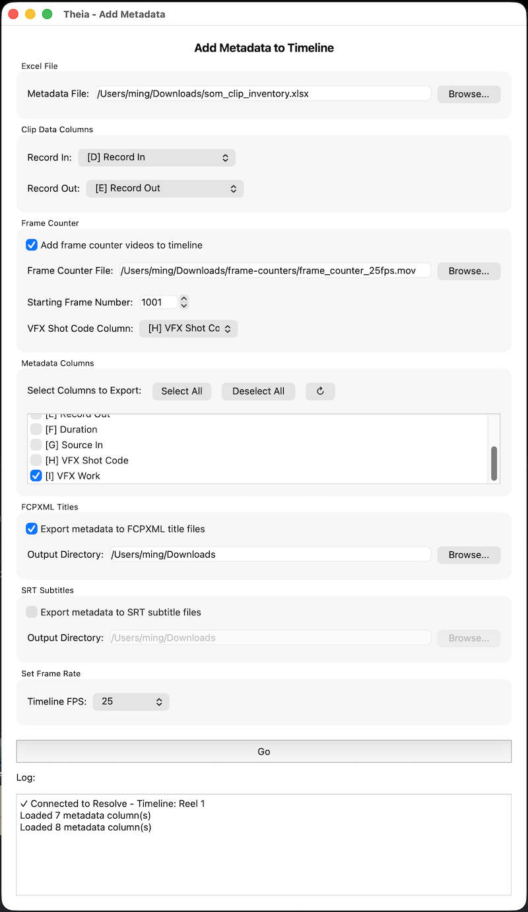

Add Metadata¶
Reads a filled-in clip inventory spreadsheet and adds metadata to timeline, in up to 3 independent ways — placing frame counter clips on the timeline, exporting FCPXML title files, and exporting SRT subtitle files. All three can run together in a single pass.
Depends on a Clip Inventory export
Add Metadata expects the spreadsheet shape that Clip Inventory produces: it must contain Record In/Record Out columns and your own metadata typed into the columns after that. See Export a Clip Inventory if you haven't generated one yet.
Launching it¶
Workspace → Scripts → Edit → 03 Add Metadata, with the matching timeline open.
Fig. 1 A typical setup

Fig. 2 Frame Counter and metadata added to timeline

Interface reference¶
Excel File¶
Path to your filled-in clip inventory spreadsheet. As soon as you enter or browse to a valid file, Theia reads its header row and populates every other section below — Clip Data Columns, Metadata Columns, and the VFX Shot Code Column dropdown all repopulate automatically.
Clip Data Columns¶
Theia tries to auto-select Record In and Record Out columns by headers (case-sensitive). If auto-detection doesn't find a match (for example, you renamed a column, or built the sheet by hand), pick the right columns yourself.
Frame Counter¶
Adds a new video track to the timeline and places a frame counter clip at the position of every shot — but only for rows where a VFX shot code is filled in.
- Add frame counter videos to timeline — enables this operation. Checked by default.
- Frame Counter File — the
.movgenerated by the Frame Counter tool. - Starting Frame Number — the frame number that corresponds to the first frame of the frame counter video (defaults to 1001, matching Frame Counter's own default Start value).
- VFX Shot Code Column — which metadata column holds the shot code used to name each placed clip. Required if Frame Counter is enabled; rows with this column empty are skipped. These named clips are exactly what the Shot List tool later reads as the frame counter track.
Metadata Columns¶
Select here the columns you want written out by FCPXML Titles and SRT Subtitles below. Typically, this can be VFX work, shot description, vendor, or general notes, but you can include any column.
- ↻ (refresh) — reload columns from the file (use after editing the spreadsheet without restarting Theia).
FCPXML Titles¶
- Export metadata to FCPXML title files — when checked, writes one
.fcpxmlfile per checked metadata column, named after the column header (e.g. a "VFX Shot Code" column becomesVFX Shot Code.fcpxml). Each file contains Basic Title elements timed to that column's Record In/Out, ready to import into Resolve as a title track. - Output Directory — where the files are written. Defaults to
~/Downloads/.
SRT Subtitles¶
- Export metadata to SRT subtitle files — same idea as FCPXML, but writes one
.srtfile per checked column (e.g.VFX Shot Code.srt), for import as a subtitle track. - Output Directory — defaults to
~/Downloads/.
Set Frame Rate¶
Theia attempts to auto-detect this from the currently open timeline; if it can't, or the value doesn't match a preset, Custom... appears with the detected (or last-used) value pre-filled. Double-check this matches your timeline before clicking Go.
Go¶
Disabled until both Record In and Record Out columns are chosen. Validates that at least one of Frame Counter / FCPXML / SRT is enabled, then runs all enabled operations in one pass, logging progress for each.
Output summary¶
| Operation | Output |
|---|---|
| Frame Counter | New video track on the open timeline, with one frame counter clip per shot, named by VFX shot code |
| FCPXML Titles | One <column name>.fcpxml file per selected column |
| SRT Subtitles | One <column name>.srt file per selected column |
Best practices¶
- If the edit needs to change after you run Clip Inventory -> Add Metadata, edit with the added frame counter videos. That will ensure Shot List works as intended the next time you run it.